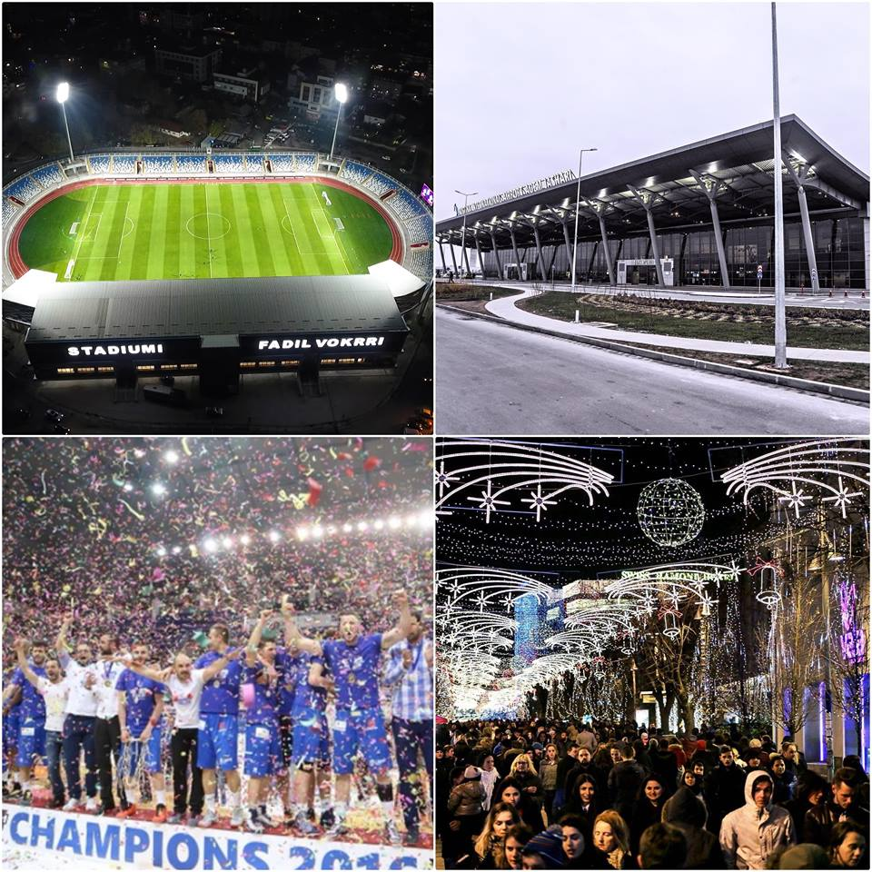

PRISHTINA

×

Prishtina është qyteti më i madh në Republikën e Kosovës si dhe kryeqyteti i saj.
Me një popullsi prej rreth 200.000 banorësh ku 80% prej tyre janë Kosovarë, Prishtina gjendet në pjesën veri-lindore të Kosovës. Prishtina karakterizohet si qendër kryesore që ndërlidhë qytetet e Kosovës si dhe qendrat më të mëdha të Ballkanit, dhe si pasojë e pozitës shumë të mire gjeografike të saj Prishtina është udhëkryq i rëndësishëm për rrugët magjistrale, automobilistike, hekurudhore dhe ajrore brenda dhe jashtë vendit.
Prishtina është qendra kryesore administrative e Republikës së Kosovës, dhe në të gjenden gati të gjitha institucionet shtetërore si: Qeveria, Ministritë, Akademia e Shkencave dhe Arteve, Aeroporti i Kosovës, QKUK, Muzeu kombëtar, Kazerma Ushtarake, Biblioteka Kombëtare, Stadiumi Kombëtar etj…
Prishtina nga viti 2008 deri në vitin 2011, e mbajti titullin “Kryeqyteti më i ri në Botë”, dhe që nga ajo kohë ekonomia, transporti dhe infrastruktura e Prishtinës vetëm se është duke u zhvilluar vazhdimisht, dhe si rrjedhojë Prishtina vazhdimisht po bëhet një vend më tërheqës për turistët e saj.
Numri i përgjithshëm i bizneseve të regjistruara në Bashkësin e Prishtinës, sipas llojit të pronës është 8.735 biznese me 75.089 punëtorë. Ku pastaj këto biznese ndahen në të gjuetisë, pylltarisë, peshkimit, industry nxjerrëse e përpunuese, energjisë elektrike, transportit, gaz dhe ujë, tregti, ndërtimtari si dhe me biznesin më të përhapur- atë të hotelierisë.
Para se të udhëtoni në një vend, ju e shikoni edhe klimën e tij, dhe Prishtina ju ofron një mot shumë të mire për adhuruesit e nxehtësisë gjatë verës si dhe për adhuruesit e temperaturave të ftohta gjatë dimrit. Me një temperature mesatare vjetore prej 10.4°C dhe me reshje prej 600mm, temperaturë mesatare gjatë verës 30°C dhe gjatë dimrit -1°C.
Më poshtë mund të gjeni disa pamje të qytetit të Prishtinës:
Slideshow Prishtina
Prishtina poashtu ofron opsione të shumta edhe në aspektin e kulturës dhe sportit, duke filluar nga Biblioteka Kombetare bashkë me 16 biblioteka të tjera publike që përmbajnë rreth 167.000 libra (vlen të ceket se gjatë kohës së okupimit serb mbi 35.000 libra shqip u dogjën dhe u asimiluan). Pastaj mund ta gjeni edhe Institutin e Operes dhe Filharmonisë së Kosovës, duke mos harruar edhe Stadiumin Kombetar “Fadil Vokrri” si dhe në Pallatin e Rinisë gjendet shtëpia e kampionëve të shumfishtë të Balkan-League: “KB Prishtina”.Ndër të tjera duhet të vizitoni edhe: Monumentin e Skënderbeut, NEWBORN, Monumentin e Zahir Pajazitit, Teatrin e Kosovës, Parkun Nacional “Gërmia”, Galerinë e Arteve, Sahatkullën, si dhe shumë Xhami të ndryshme që datojnë nga vitet e 1500-ta.
Teatrit Kombëtar i Kosovës është themeluar në tetor 1946, në Prizren. Ai së pari, ishte me emrin "Teatri Popullore Rajonal" pastaj "Teatri Popullore Provincial" deri në vitin 1999, kur ajo në fund u ndryshua në "Teatri Kombëtar i Kosovës". Ky ishte institucioni i parë profesionale teatror në Kosovë pas Luftës së Dytë Botërore. Disa muaj pas themelimit, teatri u zhvendos në Prishtinë ku gjendet edhe sot.
Kosova është një pasardhës i popullsisë së lashtë në Gadishullin Ballkanik. Nga era e Pellazgëve dhe Ilirëve, shumë prova janë gjetur në rajonin e Kosovës e sidomos në rrethinë të Prishtinës, ku dikur ishte e principata e Dardanisë. Vetëm 9 km në jug-lindje të Prishtinës, ju ende mund të gjeni rrënojat e qytetit të Ulpianës, një qytet i Perandorisë Romake.
Gjithashtu, objekt tjetër i rëndësishëm është edhe Aeroporti ndërkombëtar “Adem Jashari” që gjendet 15 km në jugperëndim të Prishtinës dhe numëron rreth 1.7 milionë udhëtar në vit, - jo keq për një vend me 2 milion banorë .
Prishtina si qendër e artit është edhe qendra e letërsisë në Kosovë. Si një qytet universitar, Prishtinë ka mijëra studentë dhe vizitorë në bibliotekat dhe botues të qytetit. Disa prej shtëpive botuese në Prishtinë, janë: "Dukagjini", "Libri Shkollor", "Dija", "Koha", "Toena", "Albas", "Rilindja", etj.
Poashtu në Sheshet e ndryshme në qendër të Prishtinës, përpos kafeneve dhe lokaleve të ndryshme ju sygjerojmë ta vizitoni atë gjatë dimrit, për të parë bukurinë dhe ngrohtësinë që e japin dritat dhe zbukurimet e shumta të vendosura nga Komuna e Prishtinës, por që atmosfera bëhet edhe më e mire nga njerëzit që i mbushin këto sheshe.
Një qështje tjetër, që mund të ju interesoj nëse jeni turist, është qështja e sigurisë, dhe të themi të drejtën, Prishtina bën pjesë në njërën ndër kryeqytetet më të sigurta dhe më miqësore në Evropë dhe Botë. Do te quditeni nga mikpritja e qytetarëve resident si dhe nga fakti se shumë prej tyre flasin gjuhë të huaj, kryesisht atë angleze.